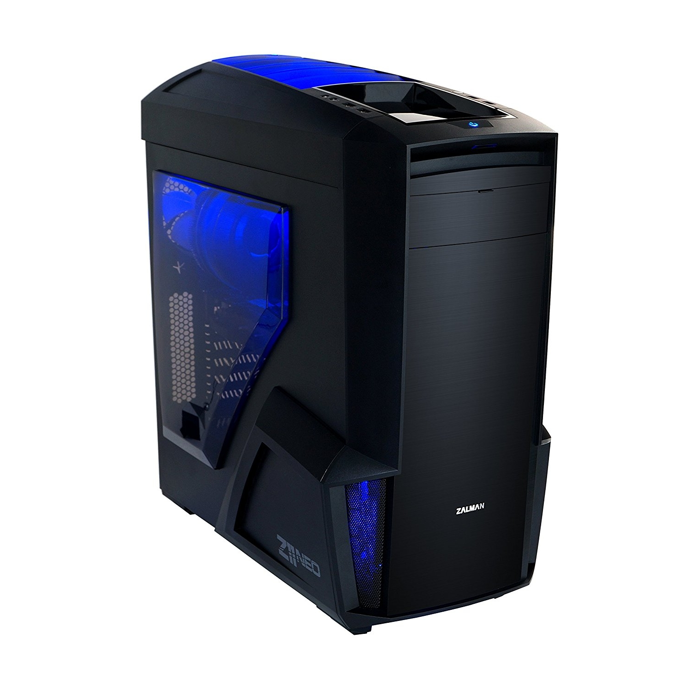

How To Build a Computer!!
Hello Everyone!! In this website we will be showing you how to build a computer. This will be a step by step guide to show you what components you need to buy, what tools you will need to have to complete the build and will also show that anyone can build one.
Building a computer has been made easier for everyone and i want to show everyone that you dont need a professional to build a simple computer. whether its a gaming computer, for work, or even for just simple home use. this guide will hopefully help out all of you that are either want to have their own computer but are in a budget or want a specific way.
PCPartPicker.com
This is a website that i have found helpful to see if your components that you have chosen on building your computer are compatible with each other. This also shows the amount of power in watts that your computer will use so you can choose the correct power supply: Click Here.